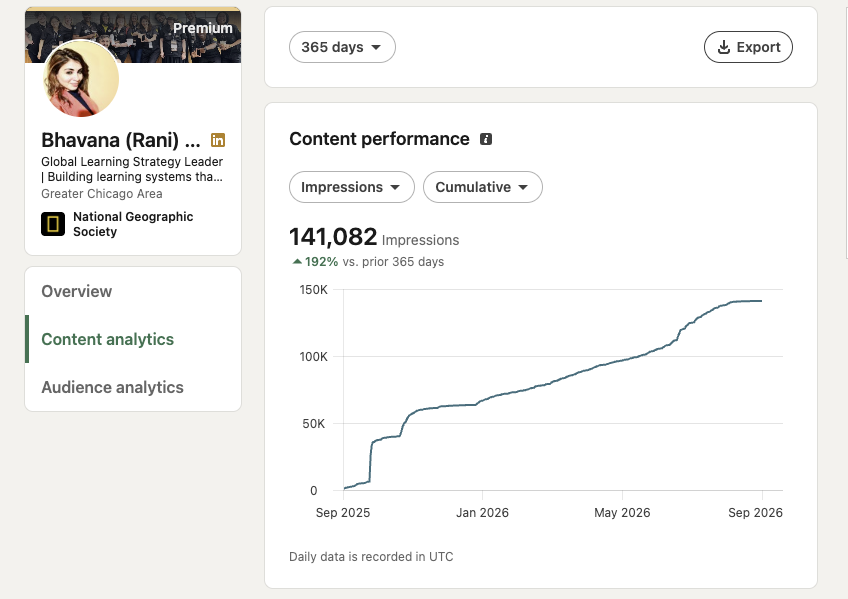
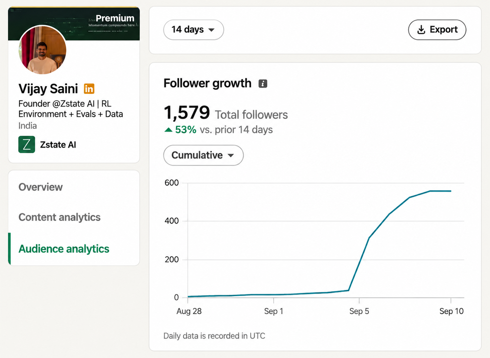
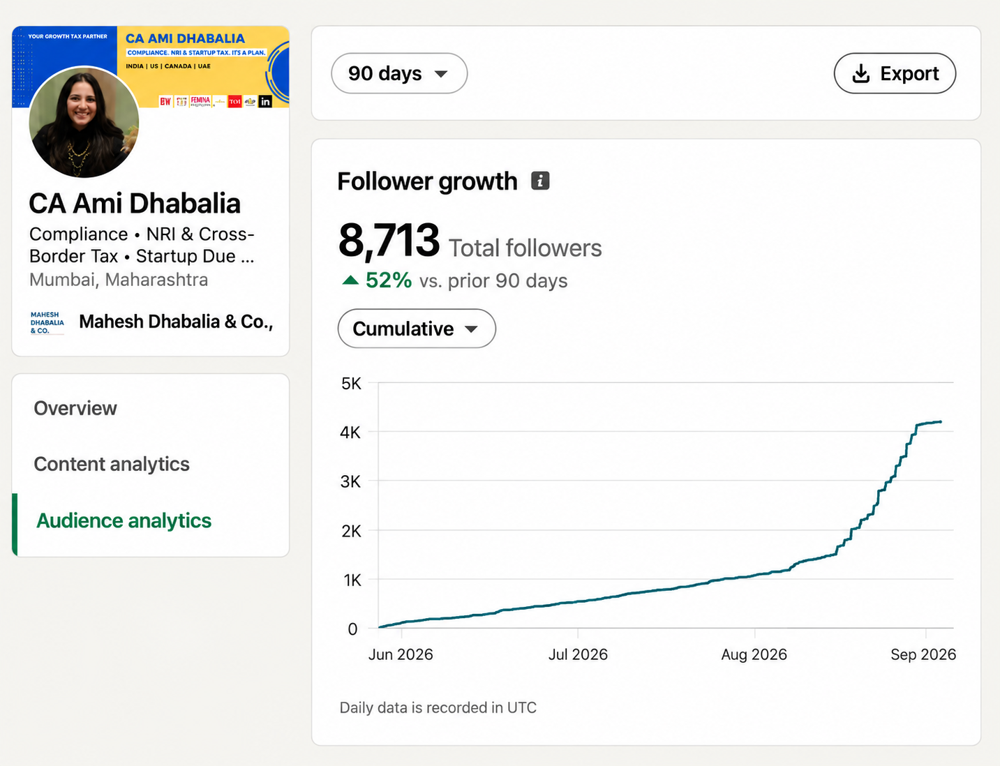

What it looks like in practice.
Real LinkedIn analytics from clients, shared with permission. Each figure keeps its original timeframe: growth compared over different windows isn't directly comparable, and we'd rather be precise than impressive.

Global Learning Strategy Leader, National Geographic Society
Bhavana (Rani)
141,082 total content impressions, alongside 379% follower growth over the same period.

1 week since onboardingFounder, Zstate AI
Vijay Saini
1,579 total followers. The chart's entire climb happened in the week after onboarding with Shriseys, not before.

Compliance, NRI & Cross-Border Tax, Mahesh Dhabalia & Co.
CA Ami Dhabalia
8,713 total followers, with growth accelerating sharply through the most recent quarter.

Entrepreneur, Ishin Fashions
Charu Agrawal
95,994 content impressions over the last three months.

Executive Director, MICS International & Founder, Ivy Growth Associates
Prateek Tosniwal
40,026 total followers, with 11,820 followers gained in the last 90 days.